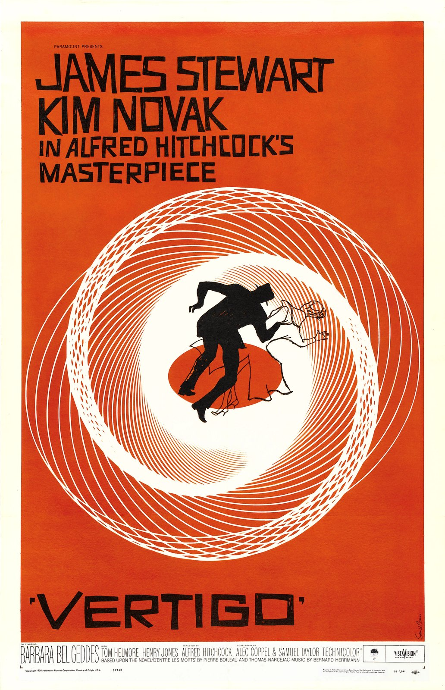

His Education
Saul attended James Monroe High School in the Bronx. When he was a teenager, he received a scholarship to take part-time art classes at the Art Students League in Manhattan. He studied under an artist named Howard Trafton, where he learned more about commercial art and design. These experiences helped him build the skills he would use throughout his career.